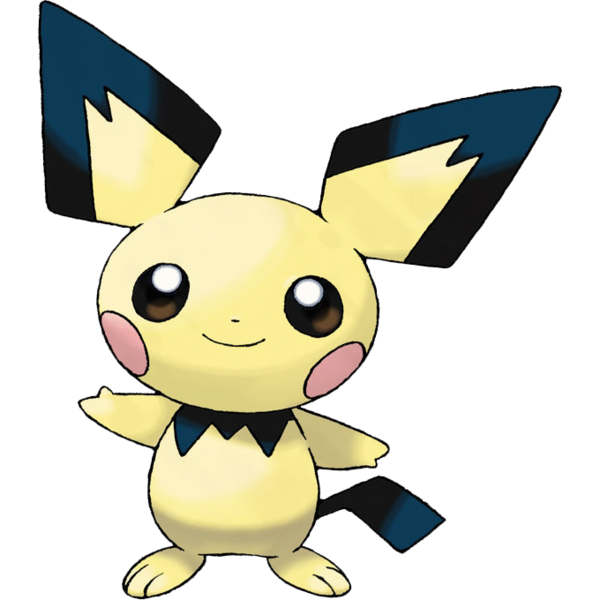
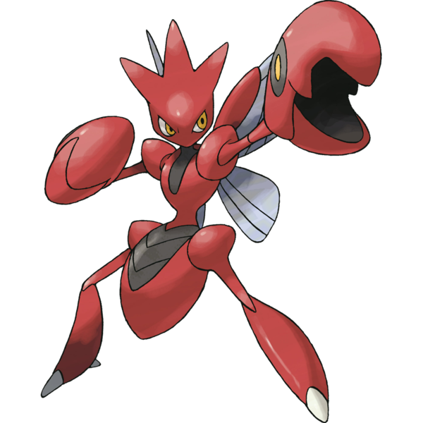
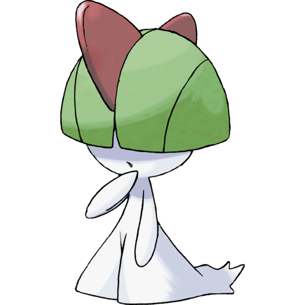

Gengar
Gengar is a dark purple, bipedal Pokémon with a roundish body. It has red eyes and a wide mouth that is usually curled
into a sinister grin. Multiple spikes cover its back, and it has large pointed ears. Its arms and legs are short
with three digits on both its hands and feet. It also has a stubby tail.

Geodude
Geodude is a gray boulder Pokémon. It has bulging, rocky eyebrows and trapezoidal, brown eyes. Its arms are muscular
with five-fingered hands. Geodude uses its arms to climb steadily up steep mountain paths. Geodude is proud of
its sturdy body and will bash against others of its kind in a contest of sorts to prove whose body is harder.
The longer it lives, the more chipped and worn its body becomes..

Dragonite
Dragonite is a draconic, bipedal Pokémon with light orange skin. It has large, grayish-green eyes and a round snout with small nostrils. A pair of long, thin antennae sprout from the top of its head, with a small horn set between them. Its striated underbelly is cream-colored, and extends from its neck to the tip of its long, tapering tail. It has thick arms and legs ending in three claws each. The leg joints are well defined, while its arms have a smooth, rounded appearance. Dragonite's wings are small relative to its body, with teal wing membranes.

Pichu
Pichu is a small, ground-dwelling rodent Pokémon with pale yellow fur. Its eartips, collar, and tail are black and angular. Pichu's pink cheek pouches can store small amounts of electricity, and its tiny nose looks like a dot. Pichu is classified as a quadruped, but it can walk easily on its hind legs.

Scizor
Scizor is a bipedal, insectoid Pokémon with a red, metallic exoskeleton. It has gray, retractable forewings and hind wings with simple, curved venation. Its head is kite-shaped with three blunt horns extending above its forehead, and dark yellow eyes. Scizor's neck and part of its thorax give the appearance of being exposed: they show black skin, and are surrounded by its raised exoskeleton. Scizor has a large abdomen with three black, pointed stripes below the waist; the female has a larger abdomen than the male. Scizor has broad shoulders and thin, segmented arms ending in large, round pincers. Scizor's legs are defined by large hip joints, thin thighs, and wide calves, its feet ending in one clawed toe in front and another in the back.

Ralts
Ralts is a humanoid Pokémon with a white body. It has thin arms and legs that widen toward the feet. There is a wispy extension trailing off the back of its feet, creating the overall impression of a nightgown or oversized dress. Most of its face is covered by green hair that resembles a bowl cut, but a pair of pinkish red eyes is sometimes visible. There are two flat, red horns on top of its head: a large one toward the front and a smaller one at the back.